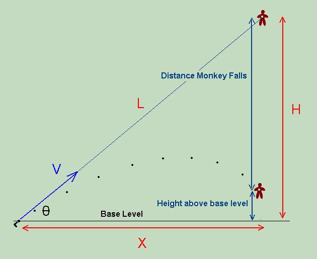

Monkey Hanging From a Tree
It is pretty easy to say that the bullet will hit the monkey because they both fall at the same rate (9.8 m/s2), but that really does not answer the question. After all, the bullet must be aimed directly at the monkey, and even though it is in free fall the instant it leaves the barrel of the gun, it is moving up, at least initially. To prove that the bullet will hit the monkey regardless of its speed is not so easy. First of all, we have to assume that the bullet is given enough initial velocity so that it will not land on the ground before it has had enough time to reach the horizontal position of the monkey. Then you can follow these steps to prove, mathematically, that regardless of the velocity, the bullet will hit the monkey:
- Apply the distance formula, d = vit + 1/2 at2 to the variables and situation shown below.
To simplify the problem, the base level is chosen as the initial height of the bullet. That will be considered 0 meters.
Apply it to the monkey (note that the monkey is starting from a height, H; the formula tells you how much it will fall from that height).
Apply it to the bullet (note that you must use the vertical component of the velocity, V).
- Next, find the time for which both the height of the monkey above the base level and the height of the bullet above the base level are equal. At this time, the Y coordinates of the bullet and monkey are the same.
- Find how far the bullet will have traveled in the horizontal direction in that time.
- Finally, show that this horizontal distance is equal to X, therefore both the X and Y coordinates of the bullet and monkey will be equal at this time, i.e., you have proved that the bullet hits the monkey.
- Since all of this must be true for any velocity and angle, leave these as variables when manipulating the equations.
